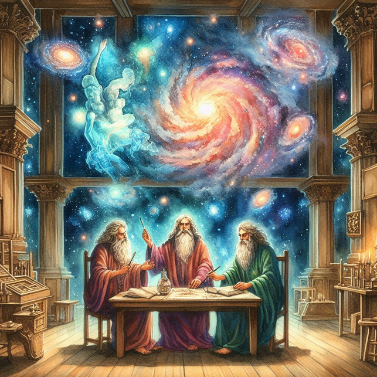

Welcome to Azios!
"The World of the Morning Star"
This is a wiki for a personal worldbuilding project.
CC BY-NC-SA

Mightspire
Mightspire is a small nation that is located between the Lands of
Salt and Silence, the ruins of the
Ashen Empire, the
Skittering Wilder, and
Ulaan. The entire population of this country lives within a single massive tower.
Geography
Mightspire is built upon a prairie, and the outside of the tower is incredibly similar to the grasslands of Ulaan.
Construction
The tower was is believed to have been built by the Ashen Empire at an unknown date, though most likely in the range of two to three thousand years before the events of the story. It is four hundred stories tall
The tower is created entirely out of smooth beige stone that has been enforced with ash magic, thus it is able to span the test of time, even outlasting the society of those who constructed it.
The inside of the tower is comprised of hundreds of different levels, each at a width of around one and a half miles. Many levels are devoted entirely to specific functions such as markets or farms.
Society
Mightspire is a unique society on Azios due to its existence being concentrated into a single building.
The society of Mightspire is an immensely collaborative one with little social divisions existing between its residents. The residents of the spire work together to make sure that their refuge is maintained and those that are unable or unwilling to contribute in a meaningful way are exiled from the tower, a fate akin to certain death due to Mightspire’s location.
The closest thing to a ruling class in the Mightspire is the
Council of the Tower which is a council comprised of the oldest and most experienced members of the society. This council is greatly respected but it cannot force any of the other citizen to do anything, though it is the group within the tower that decides to hand down the punishment of exile to those that break the laws of the tower, these decrees are enforced by the population of the tower out of their own desires and not because the Council can punish them for disobeying.
The Mightspirans have a cultural respect for natural blindness as only those who are born blind, or lose their sight due to age or illness are allowed to commune with the ancient magic of the tower. Inflicting or ensuring blindness in any purposeful way will earn the attemptee an exile. This Magic is not technically unique to the blind but it is only to be carried out by them as they can commune with the tower and suffer the least amount of consequences.
Communion with the Tower
The Mightspire is possessed by an ancient ash spirit conjured into it by the Ashen Empire in time long forgotten. The spirit serves a single dedicated role which is to prevent the tower from falling apart despite its massive size.
The spirit can perform other tasks, but like all ash magic it comes with a blood price. In the case of this specific spirit that price is eyes, a body part it has a great liking for. In exchange for eyes the spirit can confer blessings on the crops of the tower, or seal it off from the rest of Azios during an
Ice Fall Cataclysm.
Communion can take place at any of the forty floors with an eye shaped altar at their center.